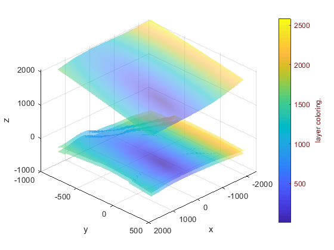
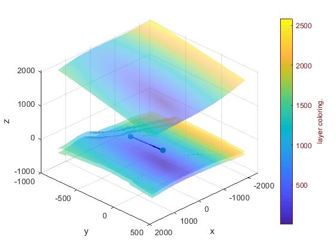

Contents
% % % % close all; % clear % DEBUG ! ! ! dbstop if error; format long addpath(genpath('../../../include'));
-----------------------------------------------------------------------------------------------------
sp = [14621234 4650653 -2000.00; 14619460 4650140 -110; 14619580 4650100 -2130; 14619460,4650100,-2110; 14619460 4650140 -2110; 14619430 4650140 -2000; 14620022 4650108 1200; 14619240 4650620 -800]; %
ep = [14619869 4649742 -2990; 14618970 4649700 -2300; 14618900 4649720 -2250; 14618900,4649720,-2340; 14618870 4649700 -2300; 14618920 4649740 -2300];
--------------------------------------------
n = 1; startpoint = sp(n, :); endpoint = ep(n, :); baseCoord = startpoint; % [14621234 4650653 2000]; se = [startpoint; endpoint] - baseCoord; % typeFitting = 'nonlinear'; [baseCoord, layerCoeffModel, layerGridModel, ax1] = test_first(baseCoord, typeFitting); num = size(layerGridModel, 1); %
--------------------------------------------
ax1 = axes(figure);
hold(ax1, 'on'); scatter3(ax1, se(:, 1), se(:, 2), se(:, 3), 50, 'filled'); plot3(ax1, se(:, 1), se(:, 2), se(:, 3), 'b-', 'linewidth', 1.5); % tic [intersection1, idxLayer, pointSet, coeffSet] = computelayerintersectscoords(layerCoeffModel, layerGridModel, layerRangeModel, se(1, :), se(2, :)); % ax1 = axes(figure); surf(ax1, xMat, yMat, ones(189, 65)) % hold(ax1, 'on'); sourceplot3D(ax1 , layerGridModel(1, :)); toc % dejong5fcn % x = simulannealbnd(fun,x0); % % a1 = [14620310.4784803,4650036.64241430,-1376.09698426868]; % quadratic % % a2 = [14620310.4784799,4650036.64241408,-1376.09698546316]; % linear % % a3 = [14620310.4784799,4650036.64241408,-1376.09698546337]; % linear % % a4 = [14620310.4784803,4650036.64241430,-1376.09698425412]; % % delta12 = a1 - a2 % delta13 = a1 - a3 % delta14 = a1 - a4 % delta23 = a2 - a3 % % a5 = [-923.528603328752,-616.362313283878,-3376.12287956811] + [14621234 4650653 2000] % a6 = [-9.235286033287517e+02,-6.163623132838775e+02,-3.376122879568111e+03] + [14621234 4650653 2000]; % delta45 = a4 - a5 % a5 - a6
时间已过 0.102889 秒。